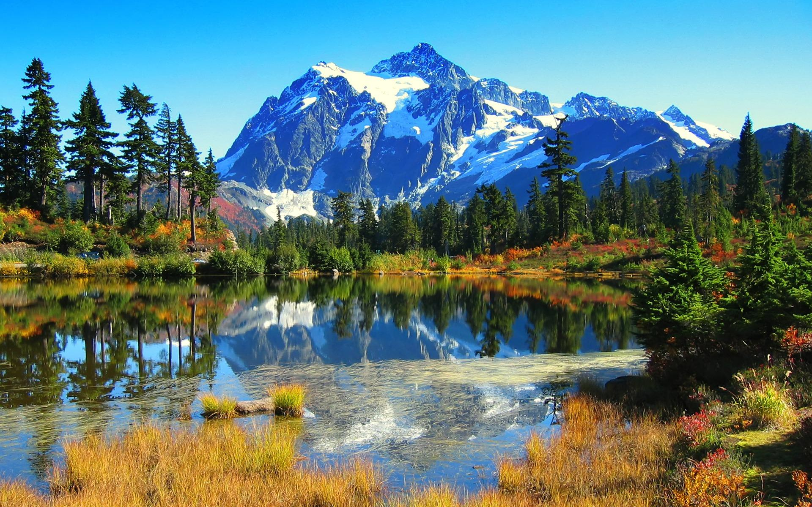
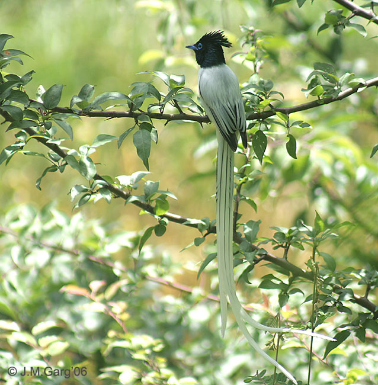

Welcome to....... Dev Bhumi
HIMACHAL PRADESH
The word Himachal means "Snow covered peaks." HIMACHAL IS.....

The Land of Lords
The Land of Temples
The Land of Mountains
The Land of Natural Beauty
The Land of Flowers and Fruits
Capital of Himachal Pradesh- Shimla
Himachal is in the western Himalayas. Covering an area of 55,673 square kilometres.Most of the state lies on the foothills of the Dhauladhar Range. At 6,816 m Reo Purgyil is the highest mountain peak in the state of Himachal Pradesh.The drainage systems of the region are the Chandra Bhaga or the Chenab, the Ravi, the Beas, the Sutlej, and the Yamuna. These rivers are perennial and are fed by snow and rainfall. They are protected by an extensive cover of natural vegetation.
Flora and Fauna
According to 2003 Forest Survey of India report, legally defined forest areas constitute 66.52% of the area of Himachal Pradesh.Vegetation in the state is dictated by elevation and precipitation. The state endows with a high diversity of medicinal and aromatic plants.Lahaul-Spiti region of the state, being a cold desert, supports unique plants of medicinal value including Ferula jaeschkeana, Hyoscyamus Niger, Lancea tibetica, and Saussurea bracteata. Great Himalayan National Park, a UNESCO World Heritage Site and Pin Valley National Park are the national Parks located in the state.
Asian Paradise Flycatcher
